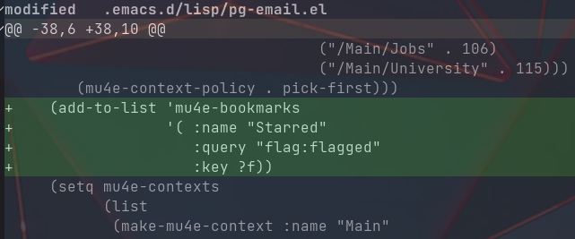
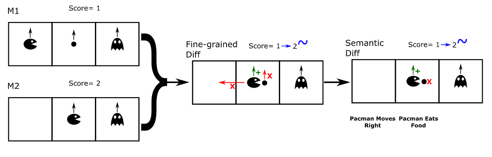
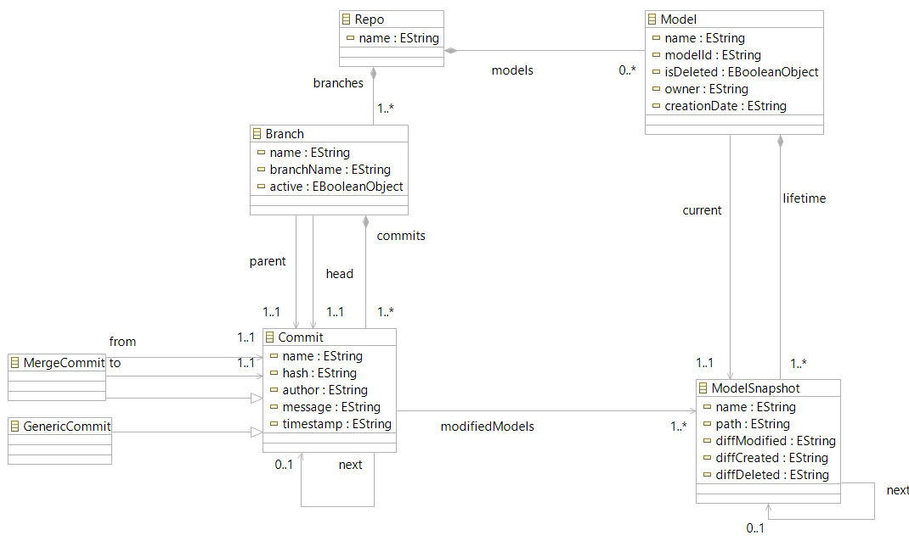
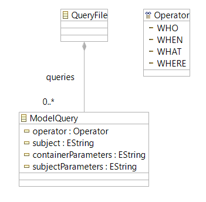
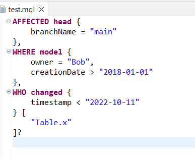
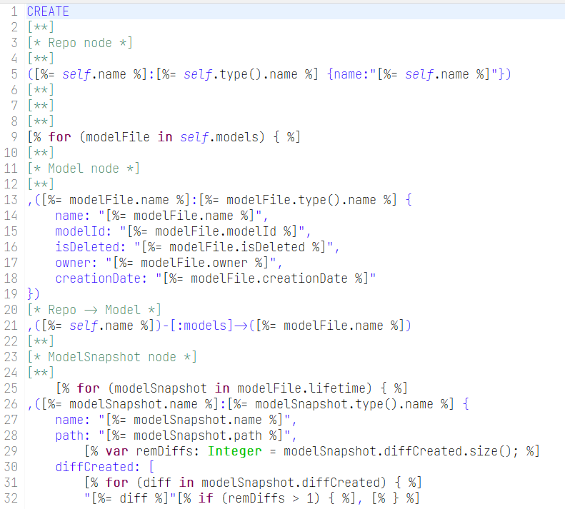
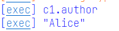

MQL
Philippe Gabriel
2022-12-01 Thu 09:30
MQL - A DSQL Designed to Query Versionnable Modeling Projects
Plan
- Introduction
- Motivation
- Goal
- Terminology
- Problem
- Problem to tackle
- Solution
- Implementation Details
- Example
- Demonstration
- Conclusion
- Related work
- Futur work
- Questions/Discussion
- References
Introduction
Motivation
Line-Oriented

Semantically-Oriented

DSMCompare: domain-specific model differencing for graphical domain-specific languages by Manouchehr Zadahmad et al.
Domain-Specific Version Control Systems
- Units of comparison - Semantic comparison
- Breadth of features (i.e. commands)
- Collaborative aspect
- Query VCS
- CICD
- Storage medium
- …
A Roadmap towards Domain-Specific Version Control Systems by Eugene Syriani and Manuel Wimmer
Goal
MQL - A DSQL to query such version-controlled modeling repositories
Terminology
| Term | Definition |
|---|---|
| Neo4J | Graph Database Management system |
| Cypher | Neo4J's graph query language |
| Graph database | Nodes and edges format of storing data useful for many relationships |
| VCS | System Responsible for managing changes to collections of information |
Problem
Problem to tackle
Provide and DSQL for querying modeling projects
Solution
- Graph database
- Queries are expressed in MQL
- Relies on model-to-text transformation
Overview
- MQL expression
- MQL model
- Model-to-text transformation
- Cypher expression
- Query execution on Neo4j database
Somewhat similar process for storing a Repository onto Neo4j
Repository

MQL

Implementation Details
Xtext grammar

Egl transformation

Ant Workflow
<?xml version="1.0" encoding="UTF-8"?>
<project default="runQuery">
<property name="skipRepo" value="false"/>
<property name="repo" value="Repo"/>
<property name="query" value="query"/>
<property name="cypherBin"
value="..\..\..\..\.Neo4jDesktop\relate-data\dbmss\dbms-ff24d0be-5732-4482-8e24-e3ec64f9deab\bin\cypher-shell.bat"/>
<target name="loadRepo">
<epsilon.emf.loadModel name="repository"
read="true"
store="false"
metamodelfile="../Repository/metamodel/Repository.ecore"
modelfile="../Repository/models/${repo}.xmi"/>
</target>
<target name="loadQuery">
<epsilon.emf.loadModel name="modelQuery"
read="true"
store="false"
metamodelfile="metamodel/ModelQueryLanguage.ecore"
modelfile="models/${query}.xmi"/>
</target>
<target name="storeRepo" depends="loadRepo">
<epsilon.egl src="../Repository/transformation/neo4j.egx">
<model ref="repository" as="M"/>
</epsilon.egl>
<echo>Repository Cypher Query Generated</echo>
<eclipse.refreshLocal resource="../Repository"/>
</target>
<target name="storeQuery" depends="loadQuery">
<epsilon.egl src="transformation/cypher.egx">
<model ref="modelQuery" as="M"/>
</epsilon.egl>
<echo>MQL Cypher Query Generated</echo>
<eclipse.refreshLocal resource="../ModelQueryLanguage"/>
</target>
<target name="createRepo" depends="storeRepo" unless="${skipRepo}">
<exec executable="cmd">
<arg value="/c"/>
<arg value="runCypher.bat"/>
<arg value="..\Repository\models\${repo}.cypher"/>
<arg value="${cypherBin}"/>
</exec>
<echo>Repo Database Initialized</echo>
</target>
<target name="runQuery" depends="createRepo, storeQuery">
<echo>Running Cypher Query...</echo>
<exec executable="cmd">
<arg value="/c"/>
<arg value="runCypher.bat"/>
<arg value="models\query.cypher"/>
<arg value="${cypherBin}"/>
</exec>
</target>
</project>
Neo4J Database

Example
Textual MQL expression
WHO head {
branchName = "main"
}?
Example
Converted to Cypher expression
MATCH (b1:Branch)-[h1:head]->(c1:Commit)
WHERE b1.branchName = "main"
RETURN c1.author
Example
Producing this result

Demonstration
Conclusion
Related Work
- NMF
- AMoR
- Mogwai
Futur Work
MQL allows one to express simple queries on a version-controlled project at a higher level of abstraction
- Enhance autcompletion feature
- Permit more complex queries
- Integration with NMF
Questions / Discussion
References
- Domain Specific Version Control Systems by Manouchehr Zadahmad Jafarlou
- DSMCompare: domain-specific model differencing for graphical domain-specific languages by Manouchehr Zadahmad et al.
- A Roadmap towards Domain-Specific Version Control Systems by Eugene Syriani and Manuel Wimmer